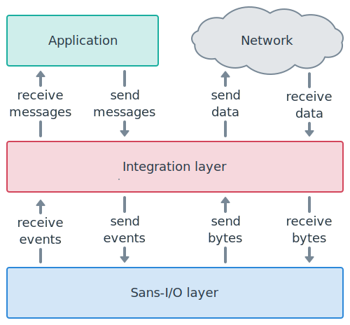

Integrate the Sans-I/O layer¶
This guide explains how to integrate the Sans-I/O layer of websockets to add support for WebSocket in another library.
As a prerequisite, you should decide how you will handle network I/O and asynchronous control flow.
Your integration layer will provide an API for the application on one side, will talk to the network on the other side, and will rely on websockets to implement the protocol in the middle.
Opening a connection¶
Client-side¶
If you’re building a client, parse the URI you’d like to connect to:
from websockets.uri import parse_uri
wsuri = parse_uri("ws://example.com/")
Open a TCP connection to (wsuri.host, wsuri.port) and perform a TLS
handshake if wsuri.secure is True.
Initialize a ClientProtocol:
from websockets.client import ClientProtocol
protocol = ClientProtocol(wsuri)
Create a WebSocket handshake request
with connect() and send it
with send_request():
request = protocol.connect()
protocol.send_request(request)
Then, call data_to_send() and send its output to
the network, as described in Send data below.
Once you receive enough data, as explained in Receive data below, the first
event returned by events_received() is the WebSocket
handshake response.
When the handshake fails, the reason is available in
handshake_exc:
if protocol.handshake_exc is not None:
raise protocol.handshake_exc
Else, the WebSocket connection is open.
A WebSocket client API usually performs the handshake then returns a wrapper
around the network socket and the ClientProtocol.
Server-side¶
If you’re building a server, accept network connections from clients and perform a TLS handshake if desired.
For each connection, initialize a ServerProtocol:
from websockets.server import ServerProtocol
protocol = ServerProtocol()
Once you receive enough data, as explained in Receive data below, the first
event returned by events_received() is the WebSocket
handshake request.
Create a WebSocket handshake response
with accept() and send it
with send_response():
response = protocol.accept(request)
protocol.send_response(response)
Alternatively, you may reject the WebSocket handshake and return an HTTP
response with reject():
response = protocol.reject(status, explanation)
protocol.send_response(response)
Then, call data_to_send() and send its output to
the network, as described in Send data below.
Even when you call accept(), the WebSocket
handshake may fail if the request is incorrect or unsupported.
When the handshake fails, the reason is available in
handshake_exc:
if protocol.handshake_exc is not None:
raise protocol.handshake_exc
Else, the WebSocket connection is open.
A WebSocket server API usually builds a wrapper around the network socket and
the ServerProtocol. Then it invokes a connection handler that
accepts the wrapper in argument.
It may also provide a way to close all connections and to shut down the server gracefully.
Going forwards, this guide focuses on handling an individual connection.
From the network to the application¶
Go through the five steps below until you reach the end of the data stream.
Receive data¶
When receiving data from the network, feed it to the protocol’s
receive_data() method.
When reaching the end of the data stream, call the protocol’s
receive_eof() method.
For example, if sock is a socket:
try:
data = sock.recv(65536)
except OSError: # socket closed
data = b""
if data:
protocol.receive_data(data)
else:
protocol.receive_eof()
These methods aren’t expected to raise exceptions — unless you call them again
after calling receive_eof(), which is an error.
(If you get an exception, please file a bug!)
Send data¶
Then, call data_to_send() and send its output to
the network:
for data in protocol.data_to_send():
if data:
sock.sendall(data)
else:
sock.shutdown(socket.SHUT_WR)
The empty bytestring signals the end of the data stream. When you see it, you must half-close the TCP connection.
Sending data right after receiving data is necessary because websockets responds to ping frames, close frames, and incorrect inputs automatically.
Expect TCP connection to close¶
Closing a WebSocket connection normally involves a two-way WebSocket closing handshake. Then, regardless of whether the closure is normal or abnormal, the server starts the four-way TCP closing handshake. If the network fails at the wrong point, you can end up waiting until the TCP timeout, which is very long.
To prevent dangling TCP connections when you expect the end of the data stream
but you never reach it, call close_expected()
and, if it returns True, schedule closing the TCP connection after a
short timeout:
# start a new execution thread to run this code
sleep(10)
sock.close() # does nothing if the socket is already closed
If the connection is still open when the timeout elapses, closing the socket makes the execution thread that reads from the socket reach the end of the data stream, possibly with an exception.
Close TCP connection¶
If you called receive_eof(), close the TCP
connection now. This is a clean closure because the receive buffer is empty.
After receive_eof() signals the end of the read
stream, data_to_send() always signals the end of
the write stream, unless it already ended. So, at this point, the TCP
connection is already half-closed. The only reason for closing it now is to
release resources related to the socket.
Now you can exit the loop relaying data from the network to the application.
Receive events¶
Finally, call events_received() to obtain events
parsed from the data provided to receive_data():
events = connection.events_received()
The first event will be the WebSocket opening handshake request or response. See Opening a connection above for details.
All later events are WebSocket frames. There are two types of frames:
Data frames contain messages transferred over the WebSocket connections. You should provide them to the application. See Fragmentation below for how to reassemble messages from frames.
Control frames provide information about the connection’s state. The main use case is to expose an abstraction over ping and pong to the application. Keep in mind that websockets responds to ping frames and close frames automatically. Don’t duplicate this functionality!
From the application to the network¶
The connection object provides one method for each type of WebSocket frame.
For sending a data frame:
These methods raise ProtocolError if you don’t set
the FIN bit correctly in fragmented
messages.
For sending a control frame:
send_close() initiates the closing handshake.
See Closing a connection below for details.
If you encounter an unrecoverable error and you must fail the WebSocket
connection, call fail().
After any of the above, call data_to_send() and
send its output to the network, as shown in Send data above.
If you called send_close()
or fail(), you expect the end of the data
stream. You should follow the process described in Close TCP connection
above in order to prevent dangling TCP connections.
Closing a connection¶
Under normal circumstances, when a server wants to close the TCP connection:
it closes the write side;
it reads until the end of the stream, because it expects the client to close the read side;
it closes the socket.
When a client wants to close the TCP connection:
it reads until the end of the stream, because it expects the server to close the read side;
it closes the write side;
it closes the socket.
Applying the rules described earlier in this document gives the intended result. As a reminder, the rules are:
When
data_to_send()returns the empty bytestring, close the write side of the TCP connection.When you reach the end of the read stream, close the TCP connection.
When
close_expected()returnsTrue, if you don’t reach the end of the read stream quickly, close the TCP connection.
Fragmentation¶
WebSocket messages may be fragmented. Since this is a protocol-level concern, you may choose to reassemble fragmented messages before handing them over to the application.
To reassemble a message, read data frames until you get a frame where
the FIN bit is set, then concatenate
the payloads of all frames.
You will never receive an inconsistent sequence of frames because websockets
raises a ProtocolError and fails the connection when this
happens. However, you may receive an incomplete sequence if the connection
drops in the middle of a fragmented message.
Tips¶
Serialize operations¶
The Sans-I/O layer is designed to run sequentially. If you interact with it from multiple threads or coroutines, you must ensure correct serialization.
Usually, this comes for free in a cooperative multitasking environment. In a preemptive multitasking environment, it requires mutual exclusion.
Furthermore, you must serialize writes to the network. When
data_to_send() returns several values, you must write
them all before starting the next write.
Minimize buffers¶
The Sans-I/O layer doesn’t perform any buffering. It makes events available in
events_received() as soon as they’re received.
You should make incoming messages available to the application immediately.
A small buffer of incoming messages will usually result in the best performance. It will reduce context switching between the library and the application while ensuring that backpressure is propagated.